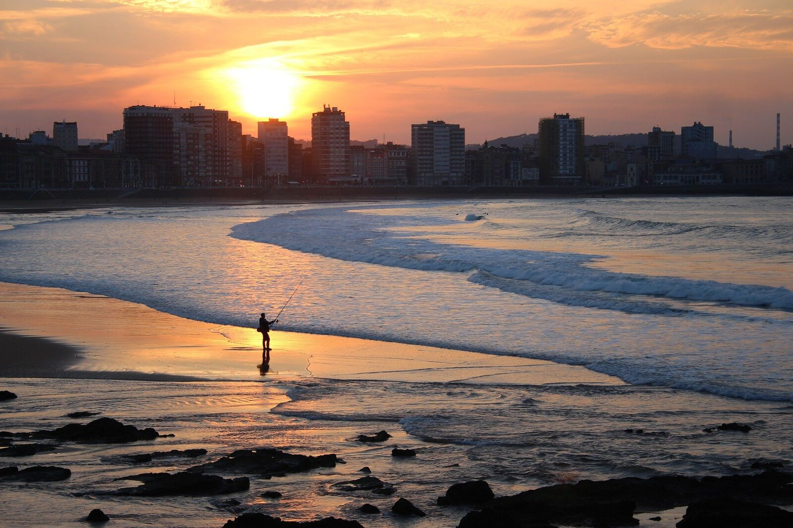
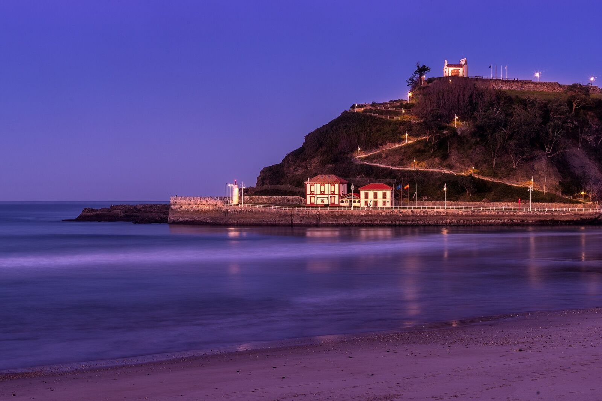
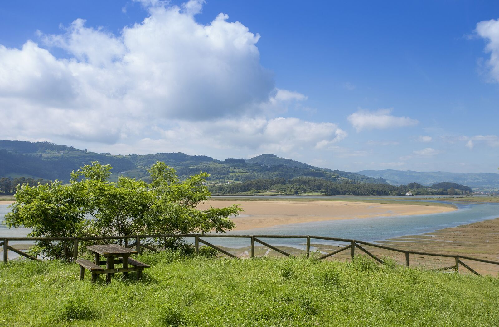

Tourism
Visiting the coast
Sea, villages and trails
The Cantabrian Sea washes some four hundred kilometres of Asturian coast: a land of fishing families, crossed by pilgrims for centuries, that has become a favourite holiday destination.
Watchtowers, cliffs and viewpoints line a shore carved by the waves, with room for surfing, fishing, sailing, diving and hiking.

- ~400 kmof coast
- 18fishing villages
- 200+beaches
Don't miss
Bufones de Pría
Sea spouts that blast water through the rock.
Cudillero
A village built like an amphitheatre over the sea.
Gulpiyuri
The inland beach.
Cape Peñas
The northernmost point of Asturias.
Dinosaur Coast
Footprints in the rocks and the Jurassic Museum of Asturias.
The coastal path
Walks along the coastline.
Eo estuary
Famous for its oysters.
Lastres and Llanes
Villages used as film sets.
Surfing beaches
Big Cantabrian waves.
Luarca and Niembro
Cemeteries with unique sea views.
Life by the sea
Fishing tradition
Depending on the season, small boats unload sardines, hake, monkfish (pixín) or sea bream, and shellfish such as velvet crabs, lobsters, sea urchins (oricios) and goose barnacles. Mending nets and canning grew up around them. Visit a fish market (rula) to watch the auction before the catch goes on sale, or one of the museums about the sea.

Traces of the past
Between Gijón and Ribadesella the rocks still keep dinosaur footprints. Local legends tell of sirens that lured sailors with their song, of l'Home Marín, a merman roaming the coast, and of the espumeros, small playful sea spirits.
Lighthouses
Lighthouses stand where bonfires once guided the boats. From the cliffs of Cape Peñas you can see the Avilés estuary and the port of Gijón on clear days. The estuaries of the Eo, Navia, Nalón, Avilés, Villaviciosa, Ribadesella and Tina Mayor are also worth exploring.

Eat and drink
Food
Food is one of the great pleasures of Asturias, and the restaurants along the coast make the most of fresh local produce. Many traditional places carry quality labels such as "Mesas de Asturias" and "Sidrerías de Asturias", and some hold Michelin stars.
All year round the seaside towns hold food festivals around fish and seafood, such as the elver festival in L'Arena and the sardine festival in Candás, both of regional tourist interest.